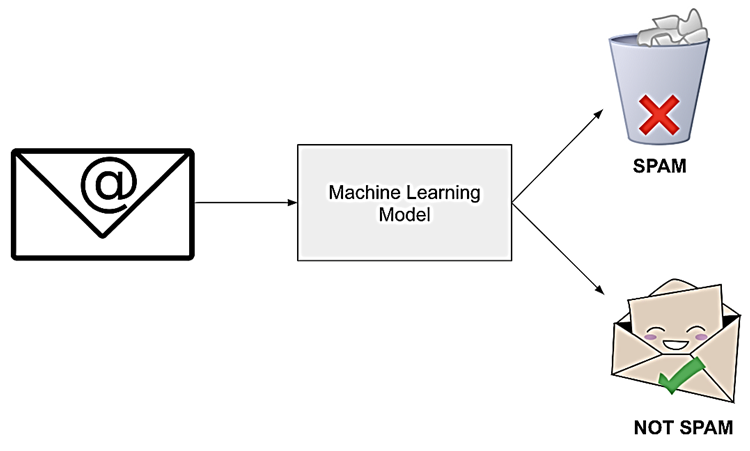

Machine Learning para Detección de SPAM en correos#
Autores: Martin Junior Alvarez Lopez, Karina Esther Rodríguez Barragán
Fecha: 07-10-2023
El siguiente artículo expone la creación de un modelo de machine learning stacked para clasificación de correos electrónicos, además de un análisis exploratorio del dataset de correos empleado y un proceso de evaluación de varios modelos clásicos de machine learning utilizados para clasificación.

En el proceso de evaluación de los modelos de machine learning, se determina cuál es el que mejor resuelve este problema y posteriormente se presenta el stacked model propuesto, con el fin determinar si clasifica mejor que los modelos predefinidos.
Publicaciones de referencia#
Artículo 1:
Improving spam email classification accuracy using ensemble techniques: a stacking approach
Autores: Muhammad Adnan, Muhammad Osama Imam, Muhammad Furqan Javed, Iqbal Murtza.
Fecha de publicación: 2 de septiembre de 2023.
Modelos utilizados:
regresión logística
árbol de decisión
K-vecinos más cercanos (KNN)
Bayes ingenuo gaussiano
AdaBoost.
Métricas utilizadas:
precisión
recall
F1 score
Mejor clasificador individual:
AdaBoost se destacó como el mejor clasificador individual.
Método propuesto: Se propone un método de apilamiento para mejorar la precisión de la clasificación combinando predicciones de todos los modelos base.
Resultados: El modelo stacked mostró un rendimiento superior con una Precisión del 98.8%, Recall del 98.8% y F1-Score del 98.9%, mejorando los otros métodos probados.
Articulo 2:
Email classification analysis using machine learning techniques
Autores: Khalid Iqbal y Muhammad Shehrayar Khan
Fecha de publicación: 17 de abril de 2022.
Modelos utilizados:
Naive Bayes
Random Forest
Decision Tree
KNN
Support Vector Machine
Artificial Neural Network
Métricas de los mejores modelos:
Máquina de Soporte Vectorial: Recall = 96.13%
Red Neuronal Artificial: Recall = 98.34%
Resumen#
En el presente estudio, se llevó a cabo un análisis exhaustivo de un conjunto de datos compuesto por mensajes de texto categorizados como “spam” o “ham” (no spam). Posteriormente, se desarrolló un modelo de aprendizaje profundo para clasificar estos mensajes. El análisis exploratorio reveló características intrínsecas de los datos, tales como un evidente desbalanceo en las clases, lo que llevó a emplear la técnica SMOTE y resolver este problema. Posteriormente se diseñó un modelo de aprendizaje profundo, basado en una arquitectura LSTM, el cuál demostró ser eficaz en la tarea de clasificación.
Introducción#
La clasificación de mensajes de texto en categorías de “spam” o “ham” es esencial en la era digital actual para filtrar información no deseada. El análisis exploratorio de datos (EDA) sirve como una herramienta fundamental para comprender la naturaleza y estructura de los datos. A su vez, los modelos de aprendizaje profundo, como las redes LSTM, han ganado popularidad debido a su capacidad para manejar datos secuenciales, como el texto. En este estudio, combinamos ambos enfoques para ofrecer una solución robusta al problema de clasificación de mensajes.
Inicialmente, se llevó a cabo un EDA del conjunto de datos, revelando detalles clave sobre la distribución y naturaleza de los mensajes. Las etapas de preprocesamiento de texto, incluida la lematización y eliminación de palabras vacías, se implementaron para preparar los datos para el modelado. Posteriormente, se empleó un enfoque de Doc2Vec para transformar los mensajes en representaciones vectoriales. Finalmente, se construyó y entrenó un modelo Stacked para la tarea de clasificación, logrando resultados prometedores en términos de Recall.
Marco Teórico#
Vectores de Embeddings para Procesamiento de Lenguaje Natural (NLP)#
En el procesamiento de lenguaje natural (NLP), los vectores de embeddings desempeñan un papel crucial al representar palabras o frases como vectores numéricos densos. Estos embeddings capturan relaciones semánticas y similitudes entre palabras, facilitando la tarea de comprensión de texto para modelos de aprendizaje automático.
Word Embeddings#
Los word embeddings, o embeddings de palabras, asignan cada palabra a un vector de números reales. Uno de los métodos más populares para generar estos embeddings es mediante modelos preentrenados como Word2Vec, GloVe o FastText. La representación vectorial permite capturar la semántica y la relación contextual entre palabras. La relación entre palabras se refleja en la proximidad de sus vectores en el espacio.
Redes Neuronales de Memoria a Largo Plazo (LSTM)#
Las redes neuronales de memoria a largo plazo (LSTM) son una arquitectura de red neuronal recurrente (RNN) diseñada para abordar el problema de la desaparición del gradiente en entrenamientos a largo plazo. Estas redes son particularmente efectivas en tareas de secuencia, como el procesamiento de texto y las series de tiempo, gracias a su capacidad para recordar y olvidar información a lo largo del tiempo.
Estructura de una Celda LSTM#
La unidad básica de una red LSTM es la celda LSTM, que mantiene una memoria a largo plazo ((C_t)) y una memoria a corto plazo ((h_t)). La actualización de estas memorias se realiza a través de compuertas (input, forget y output).
Donde:
(x_t) es la entrada en el tiempo (t).
(h_t) es la salida en el tiempo (t).
(C_t) es la memoria a largo plazo en el tiempo (t).
(f_t), (i_t), (o_t) son las compuertas forget, input y output respectivamente.
(\sigma) es la función sigmoide.
Stacked Machine Learning Models#
Los modelos apilados son una estrategia avanzada en aprendizaje automático que combina las predicciones de varios modelos base para mejorar la precisión y robustez del modelo final. Este enfoque se basa en la premisa de que la combinación de modelos diversos puede compensar las debilidades individuales de cada modelo y producir resultados más sólidos.
Composición de Modelos Apilados#
Modelo Base: Un modelo base es cualquier algoritmo de aprendizaje automático utilizado para realizar predicciones. Puede ser un modelo de regresión, clasificación u otro tipo de modelo supervisado.
Meta-Modelo: El meta-modelo, también conocido como modelo de nivel superior, utiliza las predicciones de los modelos base como características de entrada para realizar la predicción final. Matemáticamente, esto se expresa como:
donde \(\hat{y}_{\text{final}}\) es la predicción final y \(\hat{y}_{\text{base\_i}}\) son las predicciones de los modelos base.
Ventajas de los Modelos Stacked#
Mejora de la Generalización: La combinación de modelos base diversos reduce el riesgo de sobreajuste.
Aumento de la Precisión: La diversidad de modelos puede capturar patrones más complejos en los datos.